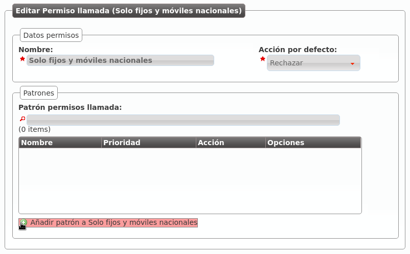
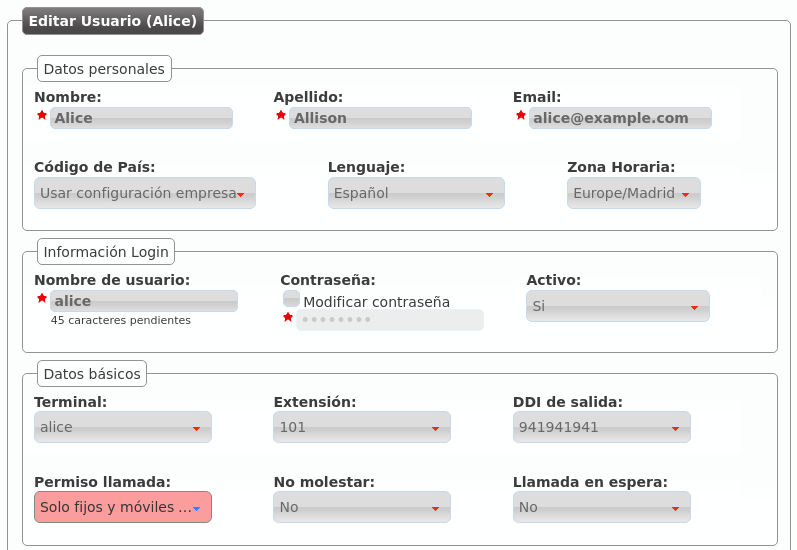

Call ACL Control¶
The Call ACLs determines what users can call to external numbers.
Attention
The internal extensions are allowed to all users, the Call ACLs only apply to external numbers
The Call ACL setup has two different parts:
Classify the call in different types based on regular expressions:
- Brand level: Brand Configuration > Generic call ACL patterns
- Company level: Company Configuration > Call ACL patterns
Choose policies for groups of patterns: Company Configuration > Call ACLs
Call ACL patterns¶
The destination number is matched against the Company ACL patterns to determine the destination type.
Note
When a Brand operator creates a new company, all of the Generic ACL patterns defined in the Brand configuration are copied to the Company configuration > Call ACLs. This way, the brand operator can define the most common patterns to speed up the company configuration.
The patterns creation process is quite simple:

This new ACL pattern includes the calls starting with the spanish country prefix followed by 6 or 7 and 8 more digits between 0 and 9. This is the E.164 format for the spanish mobile numbers.
Following this spanish example, other formats will be:
- Spanish Landline (including special numbers prefix: 902, etc.): ^34[89][0-9]{8}$
- 34 (Spain country prefix), 8 or 9 followed by 8 digits
- Spanish Landline (excluding special number prefix: 902, etc.): ^34[89][1-9][0-9]{7}$
- 34 (Spain country prefix), 8 or 9, followed by one digit between 1 and 9, followed by 7 digits.
- United Kingdom Landline: ^44[0-9]+$
- 44 (UK country prefix), followed by more digits
External numbers format
Attention
Regular expressions of Call ACL patterns must be in E.164 format.
There are two main reasons for this decision:
- The same pattern will apply to all the users of the company, no matter what country the user is.
- Brand-level ACL patterns will be inherited by all new companies. The only way this inheritance could be useful was using an standard format, valid for all the companies countries.
Besides, this way it is really easy to avoid (or allow) call to a country.
Call ACL¶
The Call ACL configuration is easier to explain with an example:
Imagine the following CALL ACL patterns:

We could create a Call ACL that only allow calling to this destinations:

Note
The default action determines what to do with the call when the destination number does not match any ACL patterns.
After creating the Call ACL we can edit it to add the required rules:
- The metric determines the evaulation order of the rules and the action that
- that will be applied if it matches the pattern (allow/deny).

Once we have added our two spanish Call ACL patterns, our Call ACL will look like this:

We only have to assign this ACL to the users in the section Company configuration > Users:
From this moment on, Alice will only be allowed to call internal extensions (they are always allowed) and spanish numbers.